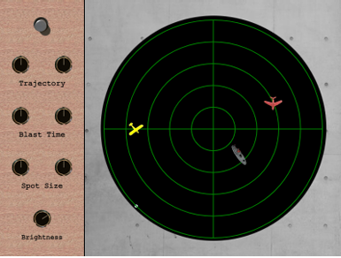

Ogni volta che avvio Unreal Engine 5 per lavorare su un mio progetto, mi fermo a pensare al percorso incredibile che ci ha portati fin qui. Da dove veniamo? Quali sono state le scintille creative che hanno dato vita all'industria che amo? Capire la storia dei videogiochi non e' solo un esercizio accademico per me; e' una fonte di ispirazione e un modo per comprendere più a fondo i principi di design che ancora oggi sono validi. In questo post, ripercorro alcune delle tappe fondamentali che hanno segnato l'evoluzione del nostro medium, riflettendo su come queste lezioni del passato influenzino il mio approccio come Game Designer oggi.
CRADS
I videogiochi sono nati nel secolo scorso, tale fenomeno `e risaputo, ma esattamente quand’`e la data di nascita di questa nuova avanguardia? Scaturiti dalle sperimentazioni derivanti dalla innovativa tecnologia bellica, dai laboratori di ricerca e da alcuni dipartimenti universitari la data forse pi`u attendibile da cui ha avuto inizio questa nuova era tecnologica `e probabilmente il 1947, quando Thomas Goldsmith e Mann Ray (da non confondere con l’artista Dada, Man Ray), crearono un gioco di nuova concezione ispi rati dalla tecnologia dei sistemi radar della Seconda Guerra Mondiale, a cui diedero il nome di CRADS- Cathode Ray Tube Amusement Device (Dispositivo di Divertimento a Tubo Catodi co). Malgrado ciò, é difficilie identificare una data precisa per la nascita del primo videogioco in assoluto, perch´e nella corsa alle prime sperimentazioni molti progetti non hanno mai realmente avuto luogo. Il gioco era stato progettato per essere giocato su un display CRT per trascinare navi e aerei nello schermo radar fino alla posizione desiderata, prendere la mira, dopodich´e premere il pulsante per fare fuoco, avendo a disposizione solo 30 secondi per regolare la traiettoria e il Blast Time. Da questo affascinante progetto, altri pionieri incoraggiati dal risultato procedettero con le sperimentazioni, e nel 1962 nasce Spacewar!, il primo gioco digitale, designato su PDP-1 e realizzato per la prima volta da Stephen Russell, Peter Samson, Dan Edwards e Mar tin Graetz, insieme ad Alan Kotok, Steve Piner e Robert A Saunders. E pensato per due giocatori, dove ogni Player controlla una della due astronavi disponibili, la ”Needle” e la ”Wedge”, mentre al centro una stella esercita la gravit`a. Il giocatore ha a disposizione come armamento dei siluri, di scorta limitata, che possono essere lanciati contro l’avversario e il gioco termina quando un Player distrugge l’altro oppure quando entrambi ri mangono senza munizioni. Successivamente poi pochi anni pi`u tardi usc`ı quello che forse `e considerato come storicamen te il più importante videogioco di sempre, che ne sancì il significato, nel 1974 nasce PONG. Questo gioco fu il primo tentativo di dare alle masse il Family Computer Game, conosciuto forse meglio come Famicom, che era accessibile a chiunque avesse un televisore a casa. Questo gioco leggendario fu il precursore dell’industria videoludica che cominci`o a diffondersi dopo la prima met`a degli anni ’70. Grazie al suo enorme successo, altri sviluppatori arrivarono a con cettualizzare e realizzare l’Arcade System, meglio conosciuto come gioco cabinato, nonch´e un prodotto popolare in tutto il mondo. Questo port`o alla creazione di ulteriori titoli storici, tra cui i pi`u ricordati ed entrati nel cuore dei giocatori e della cultura come: Space Invaders e, ovviamente, PAC-MAN.
Si nota come anche l’atteggiamento e la psicologia con cui si approccia allo sviluppo del mezzo videoludico cambi nel corso del tempo, sia CRADS, Spacewar! che PONG sono impostati con una tipologia PlayerVSPlayer, mentre da Space Invaders e PAC-MAN in poi si adotta la strategia PlayerVSComputer. Con l’evoluzione hardware e software si arriv`o a una significativa crescita nel campo dei Sistemi Operativi, che andarono di pari passo con l’esplorazione del mondo videoludico. Le architetture degli anni ’70, fondamentalmente a Circuiti Integrati, lasciarono il posto agli inizi degli anni ’80 alle neonate e rivoluzionarie tecnologie, ovvero i Microprocessori, i Personal Computer e le GUI- Graphic User Interface, l’Interfaccia Grafica permise infatti un approccio molto pi`u intuitivo nel rapporto macchina-utente. Giungendo agli anni ’90, con lo sviluppo di una nuova tecnologia, ovvero la Console System, si giunge alla attuale storia videoludica. Negli anni successivi, grazie all’evoluzione tecnologica, le console cambiarono forma e com ponenti offrendo immagini pi`u dettagliate e una maggiore immersione videoludica. L’industria crebbe esponenzialmente come la sua diffusione. Con lo scorrere degl’anni, gli apparati artistici e informatici percepirono il bisogno di produrre una diversa concezione di coinvolgimento, arric chendo il videogame con la realizzazione di Luci e Ombre, la Dinamica dei Fluidi e la Collisione e Interazione di Forze tra Oggetti. Si inizi`o ad utilizzare la tecnologia Motion Capture, non solo nelle scene di Animazione, ma anche nel Gameplay vero e proprio. All’E3- Electronic Entertainmet Expo di Los Angeles del 2018 Microsoft dichiar`o che “Il futuro dei videogiochi ´e nelle AI e nei servizi web”, tutt’oggi utilizzati per diverse attività come sport simulation e E-Sport. Il potere dei videogiochi, tuttavia, non `e fine a se stesso ma, ha condotto a numerose scoperte e diversi nuovi campi di ricerca, portando anche innovazione in altri settori.
Con l’arrivo dell’ AGU- Automated Game Understanding, il pi`u recente campo di studi in troduce l’applicazione delle AI nei videogiochi, un sistema capace di effettuare determinate azioni senza l’espicito programma, passando cos`ıad una nuova concezione videoludica. Il tutto viene supportato da vari algoritmi come i NEAT- Neuro Evolution of Augmenting Topologies, affermando cos`ı una nuova generazione di evolute Reti Neurali. Questo tipo di sistema prova ad emulare la logica umana, poich´e il programma `e scritto in maniera tale da accettare tutti gli Input e decidere gli Output, variando le decisioni finali in tempo reale con gli eventi. L’aumento della fruizione dei videogiochi durante la pandemia di COVID-19 `e un fenomeno degno di nota. Con le restrizioni sociali imposte dai vari governi, che includevano il confina mento a casa, molti hanno trovato nei videogiochi una fonte di svago e un modo per combattere la noia e l’isolamento. La possibilit`a di connettersi virtualmente con gli altri ha reso i video giochi non solo un passatempo, ma anche un mezzo di socializzazione in un periodo di forte distanziamento fisico. Di conseguenza, l’industria ha visto un notevole incremento nelle vendi te e nell’utilizzo, consolidando ulteriormente la sua posizione come una delle più rilevanti del settore dell’intrattenimento globale.
Oltre la Tecnologia: La Ricerca dell'Interazione
Ripercorrere questa evoluzione, da un semplice punto su un tubo catodico alle complesse IA odierne, mi ricorda una verità fondamentale: ogni grande innovazione è partita da un'idea semplice e da un limite tecnico da superare. Come sviluppatore e designer, il mio obiettivo è portare con me questa lezione: usare la tecnologia di oggi non solo per creare mondi più realistici, ma per trovare nuove, semplici ed eleganti forme di interazione, proprio come hanno fatto i pionieri prima di noi. Questo è ciò che mi spinge a continuare a studiare, sperimentare e, soprattutto, a creare.
